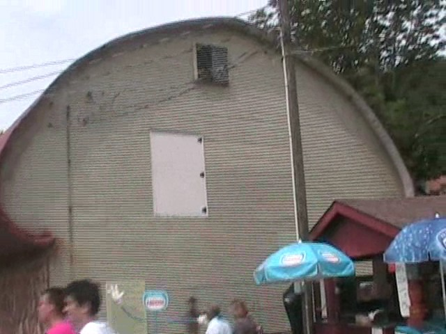
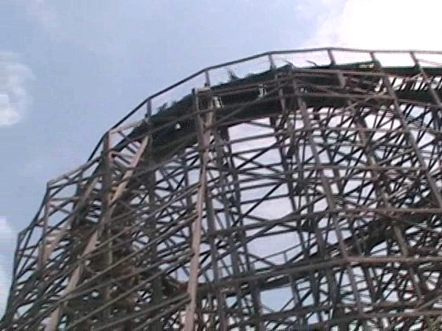
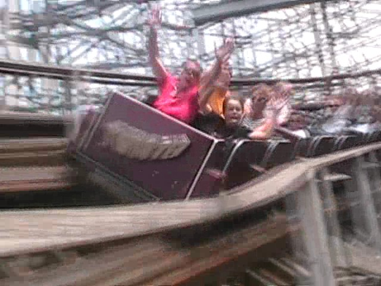
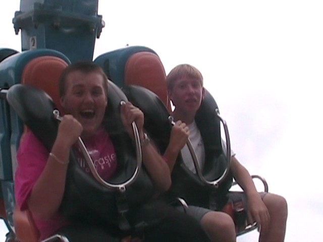

North of the Border Tour
Great Escape La Ronde Canadas Wonderland Michigans Adventure Six Flags Great America Kings Island Kennywood Knoebels Dorney Park
 The next stop was Knoebels. Although we only had two hours there, so we couldn't do alot of stuff, but anyways, onto Knoebels.
The next stop was Knoebels. Although we only had two hours there, so we couldn't do alot of stuff, but anyways, onto Knoebels.
Knoebels is a very strange park as it has alot of weird rides, weird buildings, and it's in the middle of freaking nowhere! (The Ferris Wheel is not one of their wierd rides.)
And there's no parking lot.

I assume Knoebels makes their own bread as they have a building shaped like a loaf of bread.
Ooh! Look at that weird funky flat ride. I want to ride it.
 Unfortunetly, we don't have time for that funky flat ride as we only have 2 hours here and we HAVE to get the major woodies in.
Unfortunetly, we don't have time for that funky flat ride as we only have 2 hours here and we HAVE to get the major woodies in.

Anyways, Twister is one of the woodies at Knoebels.
 As you can see, the ride is very twisted.
As you can see, the ride is very twisted.

Having fun, Good because when you get off, we're running to the next attraction.
Hey Bitch! That last photo you saw, it was taken from the exit ramp.
On Incrediblecoasters, we've had millions of gum things. Like Golrusher has a gum spot, X2 has a gum support, and Medusa has a gum exit. Well, the new record for most gum goes to Twister's Gum Exit! See that right there, there's about a dozen of these in Twister's Exit!
 One really good food item Knoebels has is Cesaris Pizza. Scarfing down that pizza was very good.
One really good food item Knoebels has is Cesaris Pizza. Scarfing down that pizza was very good.
 Games? We don't have time for Games! We have more rides to get on and are running out of time VERY quickly.
Games? We don't have time for Games! We have more rides to get on and are running out of time VERY quickly.
Ok, before we rush on with our 2 hours at Knoebels, let's learn a little about Flying Turns.
Flying Turns was supposed to be their new ride, but it's been constantly postponed for years and years.
Pictures of the Flying Turns it was modeled after in the 1900s.
Here is what the actual ride looks like.
And here are the cars you will ride in.
 Ok, back to our rushed 2 hours at Knoebels. Now it's time to go on the other wooden coaster they have, Phoinex.
Ok, back to our rushed 2 hours at Knoebels. Now it's time to go on the other wooden coaster they have, Phoinex.
 It starts out by going in a dark smelly tunnel.
It starts out by going in a dark smelly tunnel.
 But after the lift hill, the ride is nothing but PURE EJECTOR AIR!!!!
But after the lift hill, the ride is nothing but PURE EJECTOR AIR!!!!
 Phoinex has officially become my #1 Wooden Coaster.
Phoinex has officially become my #1 Wooden Coaster.
 To see this awsome woodie in action, click here.
To see this awsome woodie in action, click here.
 Now that we have ridden both of the woodies here, we can do some crazy flat rides. Unfortunetly, we could not go on Knoebels legendary Flyers today.
Now that we have ridden both of the woodies here, we can do some crazy flat rides. Unfortunetly, we could not go on Knoebels legendary Flyers today.
 Instead, we rode this f**ked up flat ride.
Instead, we rode this f**ked up flat ride.
It was just like a fair ride. Fun, Looks like it will kill you, and brutal on your thighs.
And we also got on Power Surge as well.

This ride is so awsome it makes grown men scream like little girls.
Unfortunetly, after the craziness of Power Surge, our 2 hours were up.
Dorney Park
Home